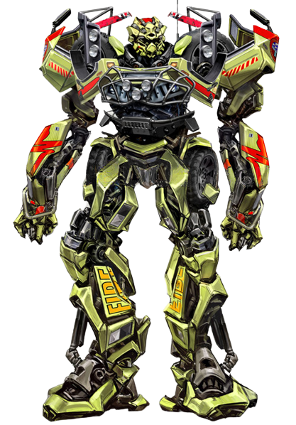
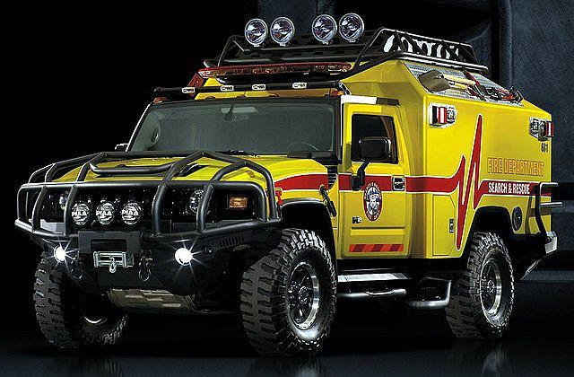

Ratchet là bác sĩ của Autobots, và có lẽ là người dũng cảm nhất trong số họ. Anh ta sẽ mạo hiểm mạng sống của mình để kéo bất kỳ đồng đội nào bị thương ra khỏi chiến trường. Thật vậy, anh ấy đã không tham gia đội của Optimus Prime để trở thành một người lính; đúng hơn, anh ấy ở đó để cứu mạng sống và nghĩ rằng Prime là cơ hội tốt nhất mà vũ trụ có được vì hòa bình. Là một bác sĩ không thích bạo lực, ngoại hình được trang bị đầy đủ vũ khí của Ratchet nhiều hơn là do anh ấy là một người ứng biến với các dụng cụ phẫu thuật, chẳng hạn như chiếc cưa vòng tyrrenium của anh ấy, thứ mà anh ấy phát hiện ra rằng anh ấy có sở thích do những kinh nghiệm ban đầu của anh ấy với tư cách là một nhà sản xuất dụng cụ và khuôn dập. [1] Khi không thể tránh khỏi chiến đấu, anh ta có thể sử dụng những vũ khí tạm thời này với sự nhanh nhẹn đáng ngạc nhiên so với kích thước của mình. Nhiều năm ở trung tâm của cuộc chiến đã dần dần khiến Ratchet thích nghi với sức nóng của trận chiến. Anh ấy đảm nhận những chiến binh mạnh mẽ nhất của Decepticons và luôn ném mình vào giữa cuộc chiến, nếu điều đó có nghĩa là anh ta phải bảo vệ các Autobot đồng đội của mình và giúp cứu lấy ngày. Tuy nhiên, anh ấy vẫn là một trong những thành viên tốt bụng thực sự nhất của Autobots, coi trọng tình bạn và tình bạn thân thiết của họ hơn tất cả, và sẽ không bao giờ phản bội lòng tin của họ. Anh ta có thể không phải là Autobot mạnh nhất, nhưng chết tiệt nếu anh ta không phải là một trong những người đáng tin cậy nhất.

Ratchet liên kết với Ironhide và Jazz , sau đó đi đến một con hẻm vắng vẻ để gặp Optimus Prime, Bumblebee và những người bạn mới của họ . Sau khi được giới thiệu với tư cách là sĩ quan y tế của đơn vị, Ratchet nhận xét rằng các cảm biến của anh ấy chỉ ra rằng mức độ pheromone của Sam cho thấy anh ấy muốn giao phối với Mikaela. (Cả Sam và Mikaela đều không đánh giá cao nhận xét này.) Anh ấy cũng giải thích hộp thoại của Bumblebee đã bị hỏng như thế nào và anh ấy đã gặp khó khăn trong việc sửa chữa nó trong một thời gian.

Theo chân Sam đến nhà của anh ấy, Ratchet và các Autobot khác của họ đã vô tình gây ra nhiều tàn phá cho sân Witwicky và gây căng thẳng cho Sam khi họ cố gắng giúp cậu bé tìm kính của ông mình . Sau khi Sam bảo họ trốn đi, Ratchet vô tình đi vào một số đường dây điện, khiến anh ta bị điện giật đến mức rơi xuống nhà kính. Ratchet nhận thấy trải nghiệm này thật thú vị và đề nghị Ironhide thử nó, và Ironhide mỉa mai rằng nó có vẻ thú vị, nhưng thật không may, nó đã gây ra sự cố mất điện trên toàn khu phố, khiến việc tìm kiếm chiếc kính trở nên khó khăn hơn nhiều. Ratchet đã cố gắng giúp đỡ bằng cách kích hoạt đèn pha mạnh mẽ của mình, điều này chỉ thành công trong việc khiến cha mẹđiều tra phòng của Sam. Khi Ironhide nhận xét rằng cha mẹ của Sam thật phiền phức, Ratchet đã mỉa mai đồng ý với anh ta bằng một từ "vâng" ba lần. Ironhide sau đó yêu cầu sự cho phép của Prime để "hạ gục chúng", và Ratchet, đột nhiên hoảng hốt, cố gắng ngăn khẩu pháo khổng lồ chỉ bằng một tay. Có thể sự gia tăng sức mạnh đó đã gây ra nhiều thiệt hại hơn là nghi ngờ.
Khi nhóm lớn đến Thành phố Mission , nó đã bị tấn công bởi Starscream , với vụ nổ làm tê liệt Bumblebee. Cùng lúc đó, Devastator tấn công những người lính còn sống sót, khiến Ratchet và Jazz giao chiến với Decepticon lớn. Khi Jazz phá hủy một trong những bệ tên lửa của Devastator, Ratchet đã dùng cưa sắt của mình để cắt đứt cánh tay trái của chiếc xe tăng.